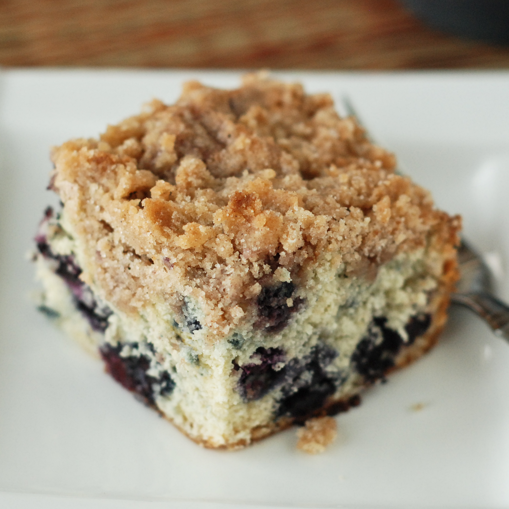

| home |
Blueberry Buckle3/4 cup white sugar 1/4 cup shortening 1 egg 1/2 cup milk 2 cups all-purpose flour 2 teaspoons baking powder 1/2 teaspoon salt 2 cups fresh blueberries 1/2 cup white sugar 1/3 cup all-purpose flour 1/2 teaspoon ground cinnamon 1/4 cup butter, softened |